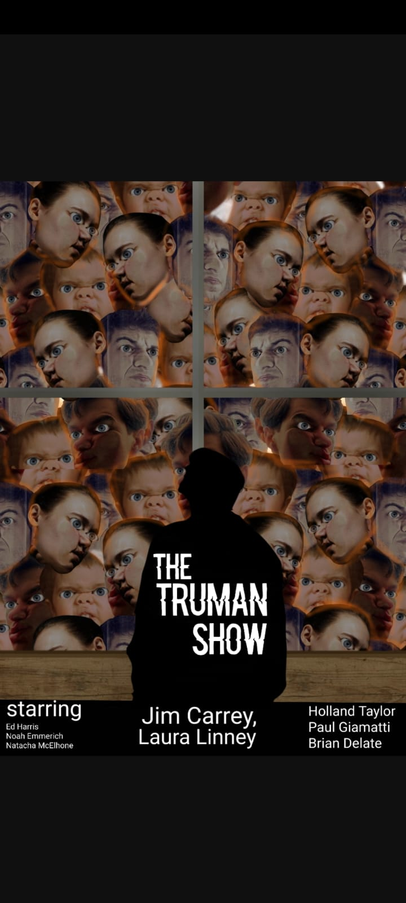
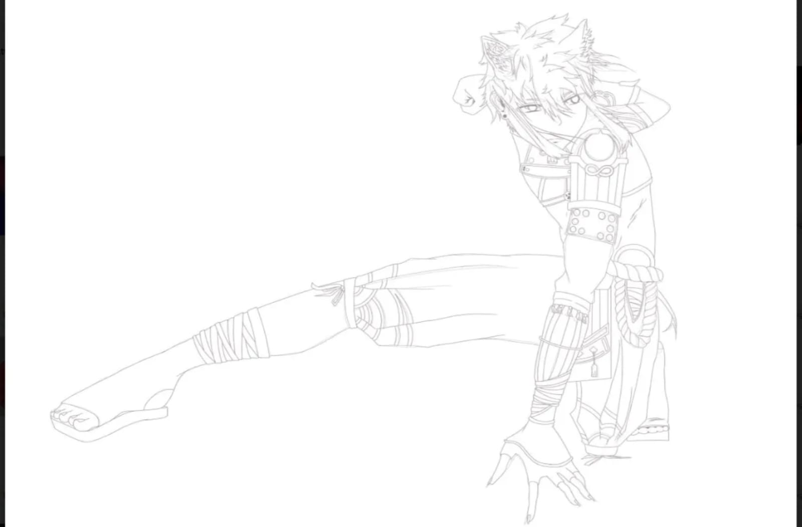
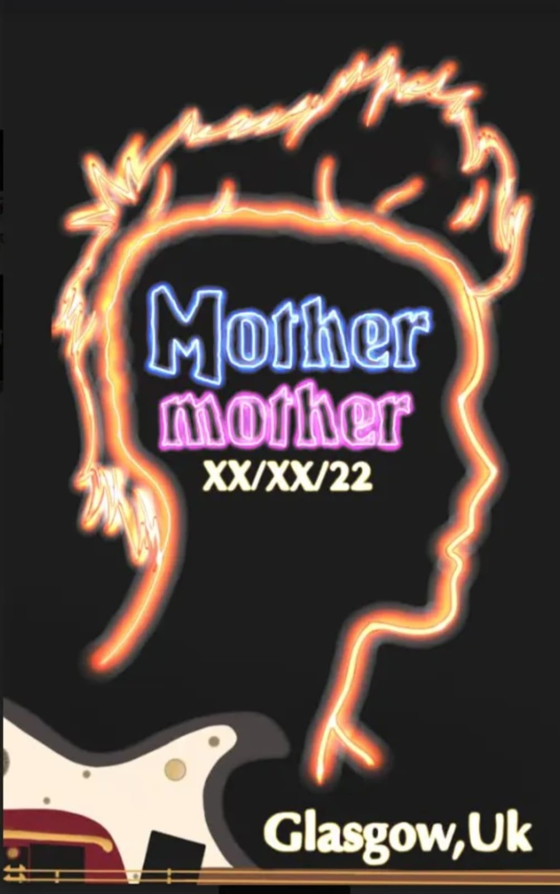
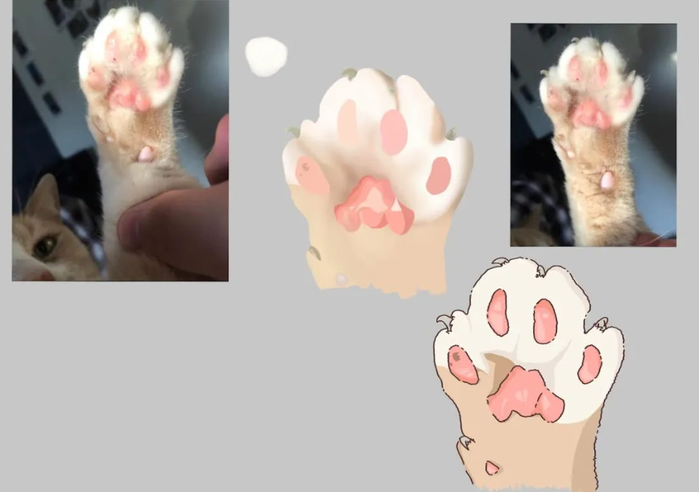
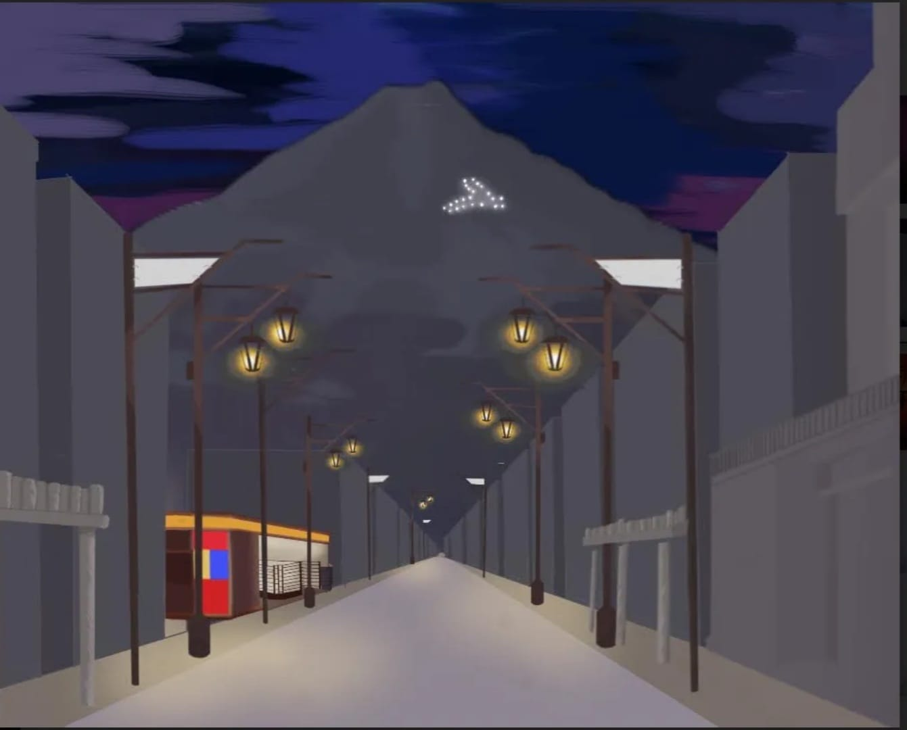

NAME OF ARTWORK: Truman Show Poster
DATE OF CREATION: 15 / 09 / 2023
MEDIA/STYLE: Digital Collage
DESCRIPTION: This poster was created as a final for a project in college. the theme was to make a movie
posters from an iconic movie to show in theaters. i decided to go with truman show because of it's eye-opening
idea. We make up conspirasies of our lives being a simulation which this movie takes advantage of to catch our
interest. i love how iconic this movie is and thought it would be perfect for this scenario.
NAME OF ARTWORK: Gorou Drawing
DATE OF CREATION: 27 / 02 / 2022
MEDIA/STYLE: Line Art
DESCRIPTION:This drawing is of a character from a video game called 'Genshin Impact'. The game is about twins that travel the universe exploring when they get split up and one gets dropped in a world where youre considered a complete outsider. You eventually build up your reputaion to get help from the many gods of this world known as Archons to help you guide you way back to your sibling. The character I drew is a side character that works with the player in their mission.


NAME OF ARTWORK: Mother Mother Poster
DATE OF CREATION: 03 / 06 / 2023
MEDIA/STYLE: Poster
DESCRIPTION: This is a concert poster I made for my Higher Art & Design final. The breif was to create a poster advertising something. Make sure to include the place, time, date and capture the atmosphere that the event would entail. I decided to make a poster for a band called Mother Mother, an alt band. The corncert would most like be indoors at night so I tried to include the dark setting with all the bright light. To make it unique I added a silhouette of the main singer and his guitar.
NAME OF ARTWORK: Ollie's paw
DATE OF CREATION: 14 / 09 / 2022
MEDIA/STYLE: illustrative
DESCRIPTION: Oliie is my cat that i've had 6 years. He was my first and favourite pet and we are really close i sketched up a tattoo design that i considered getting of his paw. i exerimented with different styles like realism but i didnt like that style so i went for something more cartoony with more flat colours. I also really like this design because it shows his freckle on his toe bean which is the same as a freckled i have on my finger.


NAME OF ARTWORK:Mt. Fuji
DATE OF CREATION: 27 / 02 / 2022
MEDIA/STYLE: illustrative
DESCRIPTION: This drawing is an early development of my National 5 final. The design brief was to make a travel poster to encourage tourists to visit and to include all of the stuff to expect. I decided to do Mt. Fuji during new years because this is a very popular time of year and i also chose this because of how pretty the lights would look at this time of year in the dark as this would add alot of contrast and visual impact to the piece. this was a sketch of Mt. Fuji from a city view before I implemented the new years theme i was trying out some perspective and business. this specific piece was not good as it was too busy and took the focal point away from the mountian because it was in the background.